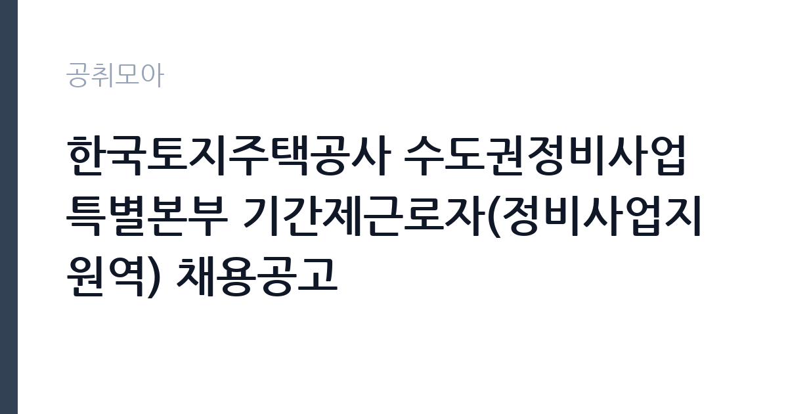

[공공기관] 한국토지주택공사 수도권정비사업특별본부 기간제근로자(정비사업지원역) 채용공고
한국토지주택공사 · 서울 · 마감 2026-11-16 (D-14) · 출처 잡알리오

한눈에 보는 모집 조건
| 기관 | 한국토지주택공사 |
|---|---|
| 공고명 | 한국토지주택공사 수도권정비사업특별본부 기간제근로자(정비사업지원역) 채용공고 |
| 고용형태 | 기간제 |
| 근무지 | 서울 |
| 게시일 | 2026-11-02 |
| 마감일 | 2026-11-16 (D-14) |
지원자격, 이렇게 읽으세요
- o 한국토지주택공사 「인사규정」제9조(채용금지) 및 「기간제근로자 운영지침」제15조(채용금지)에 해당되지 아니한 자
- o 한국토지주택공사 「직제규정」 제3조, 제4조, 제5조에 따른 임직원으로 근무한 이력이 없는 자(대한주택공사 및 한국토지공사의 근무 이력도 없어야 채용가능)
- o 공고일 현재 아래의 자격요건 중 하나를 만족하는 자
기간제 근로자는 근로계약 기간이 정해진 신분입니다. 계약 기간과 갱신 가능 여부가 근로계약서에 명시되며 기간 만료 시 근로관계가 종료됩니다. 결원 보충이나 특정 사업 기간에 맞춰 채용되는 경우가 많아 업무 범위가 명확합니다. 이번 공고는 한국토지주택공사에서 직접 진행하는 자체 전형으로, 응시자격과 제출서류는 공고문에 항목별로 제시됩니다. 이 공고는 결격 요건이 일반 채용보다 구체적입니다. LH 인사규정 제9조와 기간제근로자 운영지침 제15조의 채용금지 사유에 해당하지 않아야 하고, 본인과 배우자, 생계를 같이하는 직계존비속이 사업본부 관할 사업지구 내 토지 등 부동산을 보유하지 않아야 합니다. LH 임직원 근무 이력이 없어야 한다는 조항도 있어 대한주택공사와 한국토지공사의 근무 이력까지 확인합니다. 자격은 정비사업 관련 민간자격 소지자이거나 정비사업 관련 실무 경력 3년 이상이어야 합니다. 서류는 접수 마감 이후 보완이 되지 않으므로 자격 요건과 증빙 서류를 마감 전에 모두 갖춰야 합니다. 공고문에 명시된 우대 사항은 해당 여부를 확인해 증빙을 첨부해야 가점이 반영됩니다. 공고문의 응시자격 표를 보면 자격 항목이 여러 줄로 나뉘어 있으므로, 각 줄을 하나씩 체크하며 본인 해당 여부를 표시해 두면 누락을 줄일 수 있습니다. 이 공고 원문에 적힌 응시 조건 문구는 'o 공고일 현재 아래의 자격요건 중 하나를 만족하는 자' / '정비사업 관련 민간자격(정비사업전문관리사, 도시정비전문관리사) 소지자' / '정비사업 관련 실무 경력*이 3년 이상인 자'입니다. 문구를 그대로 읽고 본인 해당 여부를 하나씩 표시해 두면 서류 단계에서 탈락하는 일을 줄일 수 있습니다.
이 공고의 포인트
이 공고의 첫 번째 포인트는 고용 형태입니다. 계약 기간이 정해져 있어 근무 종료 시점이 명확합니다. 그만큼 짧은 기간에 어떤 실적을 남길지가 중요해집니다. 두 번째는 업무 범위가 명확하다는 점입니다. 정비사업 지원(도시정비) 직무로 채용되므로 배치 이후 담당 업무가 크게 흔들리지 않습니다. 세 번째는 근무지입니다. 서울 지역 근무로 접근성은 좋지만 그만큼 지원자가 몰리는 지역이므로 경쟁률을 넉넉히 잡아야 합니다. 모집 인원이 적은 만큼 지원자 한 명 한 명의 서류 완성도가 당락에 크게 작용합니다. 같은 직무로 함께 올라온 공고 6건 가운데 마감이 중간에 위치하므로 다른 공고와 일정이 겹치는지 확인하십시오. 선발 인원은 공고문에 명시되어 있으니 모집분야 항목을 함께 확인하십시오.
전형은 어떻게 진행되나
1차 서류, 2차 면접의 2단계로 진행되는 구성이 일반적입니다. 서류에서는 자격 요건과 경력 증빙을 확인하고, 면접에서는 실제 업무 수행 능력과 조직 적응을 봅니다. 직무에 따라 필기시험이나 실기, 컴퓨터 활용 시험이 추가되기도 하므로 공고문의 전형표를 먼저 확인하십시오. 단계별로 합격자만 다음 전형에 응시할 수 있고, 단계마다 응시 자격 확인 서류를 다시 제출해야 하는 경우가 있습니다. 최종합격자 발표 후에는 신원조회와 채용 신체검사가 남아 있습니다. 경력 증명서에 직무 내용이 적혀 있지 않으면 인정받지 못할 수 있으므로 상세 기재를 요청하십시오.
원문에서 확인한 전형 방식
o 한국토지주택공사 「인사규정」제9조(채용금지) 및 「기간제근로자 운영지침」제15조(채용금지)에 해당되지 아니한 자 o 본인, 배우자, 생계를 같이하는 본인의 직계존비속, 생계를 같이하는 배우자의 직계존비속이 사업본부 관할 사업지구 내 토지 등 부동산을 보유하지 아니한 자 o 한국토지주택공사 「직제규정」 제3조, 제4조, 제5조에 따른 임직원으로 근무한 이력이 없는 자(대한주택공사 및 한국토지공사의 근무 이력도 없어야 채용가능) o 공고일 현재 아래의 자격요건 중 하나를 만족하는 자 1. 정비사업 관련 민간자격(정비사업전문관리사, 도시정비전문관리사) 소지자 2. 정비사업 관련 실무 경력*이 3년 이상인 자 * 도시 및 주거환경정비법 제 102조에 따른 정비사업전문관리업체, 시공사 또는 조합 (주민대표회의) 소속으로 도시정비 관련 실무를 수행한 기간
이런 분께 추천해요
- 정비사업 관련 자격이나 실무 경력 3년 이상인 분
- 사업지구 내 부동산 보유 등 결격 사유가 없는 분
- 문서 작성과 현장 확인을 함께 수행할 수 있는 분
지원 전 체크리스트
- 응시자격 요건과 경력 기준을 충족하는가 — 경력은 증명서로 입증해야 합니다
- 계약 기간과 근무 시작일·종료일을 확인했는가
- 제출서류 목록을 모두 준비했는가 — 누락 시 서류 단계에서 탈락합니다
- 접수 마감 2026-11-16 이전에 접수 방식을 확인해 제출했는가
모집 일정과 제출 타이밍
2026-11-02에 공고가 올라왔고 접수는 2026-11-16까지입니다. 남은 기간은 14일이며, 이 기간에 자격증 사본과 경력증명서, 주민등록등본 같은 기본 서류를 모두 준비해야 합니다. 경력증명서는 발급에 며칠이 걸리는 경우가 있으니 가장 먼저 신청하십시오. 접수는 온라인과 우편·방문으로 나뉘는 경우가 많고, 우편 접수는 도착 기준으로 판정되므로 마감일 소인만 믿으면 안 됩니다. 면접 일정은 서류 발표 후 개별 통보되므로 제출 후에도 연락을 받을 수 있도록 유지해야 합니다. 임용 예정일이 빠르게 잡히는 공고이므로 현재 일정과 겹치지 않는지 미리 확인하십시오. 서울 근무지는 대중교통 접근성이 좋은 대신 주차와 통근 시간이 변수입니다. 출퇴근 경로를 미리 확인하십시오. 마감까지 2주 안팎이 있어 준비할 시간은 있지만 미루면 촉박해집니다. 선발 인원은 공고문의 모집분야 항목에 직종별로 제시되어 있습니다.
직무 이해하기: 공공기관
한국토지주택공사 수도권정비사업특별본부의 정비사업지원역은 도시정비사업을 지원하는 기간제 직무입니다. 정비사업 구역의 현황 자료를 정리하고, 조합·주민대표회의와의 협의 자료를 준비하며, 사업 진행 상황을 기록합니다. 관련 법령과 지침에 따라 서류를 검토하고 내부 보고 자료를 만드는 업무가 중심입니다. 현장 확인이 필요한 경우 사업지구를 방문해 실태를 파악합니다. 사업 일정에 따라 업무량이 몰리고, 마감이 겹치면 야근이 발생합니다. 업무 매뉴얼과 지침이 문서로 정리되어 있어 절차를 익히면 반복 업무는 빠르게 손에 붙습니다.
자기소개서 작성 팁
지원서는 정비사업 관련 경력을 사업 단위로 정리하는 것이 효과적입니다. 참여한 사업의 규모와 단계, 본인이 맡은 업무, 처리한 서류의 종류를 구체적으로 쓰십시오. 관련 자격과 취득 연도는 서류에서 확인되므로 자소서에서는 판단 과정과 협의 경험을 서술하는 편이 좋습니다. 이해충돌 방지 규정을 이해하고 있다는 점을 한 문단 더하십시오. 구성은 지원 동기, 직무 경험, 기여 방안 순서가 무난합니다. 지원 동기는 한국토지주택공사의 사업 중 본인이 관심을 가진 부분을 한 가지로 좁혀 서술하고 추상적인 표현은 줄이십시오. 직무 경험은 담당했던 업무와 규모, 결과를 수치로 제시하면 설득력이 올라갑니다. 기여 방안은 입사 후 첫 3개월과 1년 계획으로 나눠 쓰면 준비도가 드러납니다.
면접 준비 포인트
면접에서는 정비사업 절차에 대한 이해를 확인합니다. 사업 단계별로 어떤 서류가 필요한지, 조합과 갈등이 생겼을 때 어떻게 조율할지 묻습니다. LH는 공공 시행자로서 이해충돌 관리가 엄격하므로, 사업지구 내 부동산 보유 여부나 친인척 관련 사항을 솔직하게 밝히는 편이 안전합니다. 문서 작성과 현장 확인을 함께 수행한 경험도 답변 소재가 됩니다. 답변은 상황, 판단, 조치의 순서로 정리하면 전달이 분명해집니다. 모르는 질문에는 모른다고 밝히고 확인 방법을 제시하는 편이 억지 답변보다 낫습니다. 마지막에는 근무 의사와 함께 2026-11-16 이후 일정에 언제든 응할 수 있다는 점을 전달하십시오. 답변 시간이 짧게 정해져 있는 경우가 있으므로 핵심 문장을 먼저 말하고 근거를 붙이는 방식이 유리합니다.
급여·근무조건 읽는 법
한국토지주택공사는 알리오 2025년 결산 공시 기준 일반정규직 1인당 평균보수 8,408만원, 신입사원 초임 4,118만원으로 공시되어 있습니다. 이번 공고는 기간제근로자 채용이라 위 정규직 평균보수는 그대로 적용되지 않고, LH의 기간제 임금 기준과 계약 기간에 따라 보수가 정해집니다. 월 급여에 계약 개월 수를 곱한 총액으로 비교해야 하며, 수당과 상여 포함 여부를 함께 확인하십시오. 구체적 금액은 공고문 처우 항목에서 확인할 수 있습니다. 2026년 적용 최저임금은 시급 10,320원, 월 환산 2,156,880원(주 40시간·209시간 기준)입니다. 고용노동부 고시 제2025-47호로 확정된 금액입니다. 공고문에 금액이 제시되지 않은 항목은 원문 보수표나 처우 설명에서 확인해야 하며 확인되지 않은 수치는 쓰지 않는 것이 원칙입니다. 비교할 때는 월 급여뿐 아니라 상여·명절휴가비·복지포인트·초과근무수당까지 포함한 연간 총액으로 계산하십시오. 기간제라면 계약 기간 동안의 총액을, 무기계약이라면 호봉 상승과 정년까지의 누적 소득을 기준으로 판단하는 편이 정확합니다.
자주 묻는 질문
- 선발 인원은 몇 명인가요?
공고문의 모집분야 항목에 직종별 인원이 표로 제시되어 있습니다. 첨부된 공고문 원문에서 확인하십시오. - 근무지는 어디인가요?
서울 지역의 한국토지주택공사 소속 근무지입니다. 세부 주소와 출퇴근 조건은 원문 공고문에서 확인할 수 있습니다. - 보수는 얼마인가요?
채용 신분(기간제)과 기관 임금 규정에 따라 정해지며 구체적인 금액은 공고문 처우 항목에 제시됩니다. 금액이 공개되지 않은 경우에는 원문의 보수표를 확인하십시오.
함께 보면 좋은 공고
[공공기관] 2026년 한국특허정보원 체험형 청년인턴 채용 — 마감 2026-11-18[공공기관] 한국폴리텍대학 진주캠퍼스 행정지원직(사무직원 휴직 대체인력) 채용 공고 — 마감 2026-11-10[공공기관] 대구경북첨단의료산업진흥재단 2026년 3차 정원외 계약직원 채용공 — 마감 2026-11-17출처: 잡알리오 공개정보를 바탕으로 공취모아가 정리한 안내글입니다. 모집 조건·일정은 변경될 수 있으니 지원 전 반드시 원문 공고문을 확인하세요. 본 글은 정보 제공용이며 합격을 보장하지 않습니다.